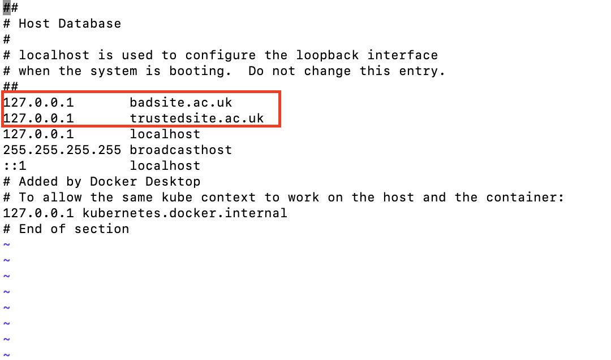
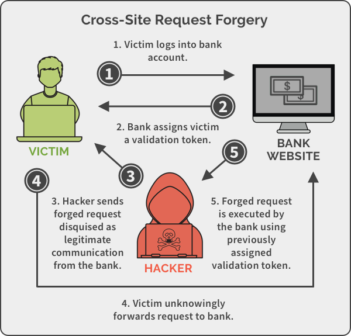

java -jar vulnerable-webapp-1.2.0.jarjblogs and the default password is pa55word.Open the hosts file (which is just a text file) as the root account using vi or similar e.g. sudo vi /etc/hosts (or you could try xdg-open, if that works e.g. sudo xdg-open /etc/hosts)
127.0.0.1 badsite.ac.uk
127.0.0.1 trustedsite.ac.uk
For example, your hosts file may look like this:

Cross-Site Request Forgery (CSRF or XSRF) allows an attacker to forge a malicious cross-origin write request to a targeted web application that invokes sensitive functions on behalf of an authenticated user. Forged requests are usually represented in the form of a hyperlink, zero-width image, in-page JavaScript request, or auto-submitted form post. Some form of social engineering (e.g. a URL to a website in a phishing email), is used by the attacker to trick a victim into unknowingly submitting such a request.

https://spanning.com/blog/cross-site-forgery-web-based-application-security-part-2/cross-site-request-forgery-example/
CSRF exploits existing user session identifiers with ambient authority that are provided automatically by the browsers during each request, e.g. cookies such as the JSESSIONID, or the IP address of the victim. As the attacker has no way of determining/reading the results of that request, useful requests are limited to state-changing, non-idempotent (has side effects) actions that the user is allowed to perform.
http://trustedsite.ac.uk:8080/ you should see a login page.http://badsite.ac.uk:8080/lottery-winnershttp://trustedsite.ac.uk:8080/ and log in using jblogs and pa55wordhttps://badsite.ac.uk:8080/lottery-winnershttp://trustedsite.ac.uk:8080/ and click the logout button (top right)jblogs and pa55word. Does it work?Some kind of phishing attack would be one way of getting the user to click on a hyperlink and visit badsite. You might need to hide the domain name of course e.g.
https://cardiff.org/Now we'll look at two common mitigations to CSRF attacks.
A CSRF token is a secure random token (e.g., synchronizer token or challenge token) that is used to prevent CSRF attacks. The token needs to be unique per user session and should be a cryptographically strong random value to make it hard to guess.
The token is embedded by the web-server into HTML pages it controls (e.g., inside HTML forms). It then expects to see the same token in any HTTP request back to the server. The attacker has no way of knowing the token, and so can not send it during the forged request (not even with JavaScript because of the Same-Origin-Policy that prevents JavaScript from reading pages cross-origin). CSRF Token.
To enable Spring Security's Synchronizer Token Pattern, run the jar file again with the flag csrfEnabled=true e.g.
java -DcsrfEnabled=true -jar vulnerable-webapp-1.2.0-SNAPSHOT.jar
Now, try the following:
http://trustedsite.ac.uk:8080/ and log in using jblogs and pa55word.http://badsite.ac.uk:8080/lottery-winnersTo see the token that gets embedded on trustedsite:
http://trustedsite.ac.uk:8080/password-reset/ (log in if required).inspect the new password form.newPassword input that carries the CSRF token Spring Security generated, e.g.:<input type="hidden" name="_csrf" value="5f5754bb-eefc-4f5f-9603-911406df1d4f">
The reason that Cross-Site Request Forgery occurs is that a form of ambient authority is sent from the browser to the server for each request. In our case — as is true in most cases — this is the `JSESSIONID session cookie. So what if you can limit when the browser sends this cookie?
You can set the session cookie (JSESSIONID) with the SameSite cookie attribute. Using the value Strict will prevent the browser from sending the session cookie during cross-site POST requests, hence preventing the CSRF attack from http://badsite.ac.uk.
This can be enabled on the application using the sameSiteEnabled=true flag e.g.
bash
java -DsameSiteEnabled=true -jar vulnerable-webapp-1.2.0.jar
Then:
http://trustedsite.ac.uk:8080/ and log in using jblogs and pa55word.http://badsite.ac.uk:8080/lottery-winnersNetwork Tab in the Dev Tools window.